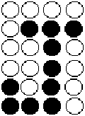

booleanValue ::= booleanToken
boolean booleanMap borderPatternVisible fillPatternVisible visible
BooleanValue is used to describe the primitive boolean set. The set for Level 0 includes the boolean values true and false.
(property threeState (boolean (true)))
This statement could be used in an instance to assign the value true to the property named threeState.
borderPattern ::= '(' 'borderPattern'
pixelPattern
')'
BorderPattern is used to specify the stipple or pixel pattern for a border, or the perimeter of a path, openShape, circle, polygon, rectangle or shape.
BorderPattern may be specified in figureGroup within the displayAttributes form in the technology block of a library. In this case, the pattern is the default border pattern to be used to outline all figures in the figure group with which the display attributes are associated. BorderPattern may also be specified in the displayAttributes form in figureGroupOverride within the figure itself. In this case, the border pattern specified is used to override the default border pattern.
The pattern only affects the display of figures, not their fabrication.
The default borderPattern is:
(borderPattern (pixelPattern 1 (pixelRow (true))))
(borderPattern
(pixelPattern 4
(pixelRow (false) (false) (false) (false))
(pixelRow (false) (true) (true) (true))
(pixelRow (false) (false) (true) (false))
(pixelRow (false) (false) (true) (false))
(pixelRow (true) (false) (true) (false))
(pixelRow (true) (true) (true) (false))))
The above example specifies a border pattern which would fill the border with J character patterns, as shown in the following diagram.

booleanValue borderWidth color false figure fillPattern true visible
borderPatternVisible ::= '(' 'borderPatternVisible'
booleanValue
')'
BorderPatternVisible defines whether or not the border pattern is visible. The default is that the border pattern is visible.
(figureGroup filled_shapes (displayAttributes (borderPatternVisible (false))))
In this example, the figureGroup filled_shapes has no visible display of the border pattern.
fillPatternVisible borderPattern
borderWidth ::= '(' 'borderWidth'
( lengthValue | minimalWidth )
')'
The borderWidth construct is used to define the display or plot width of the border or edge of all figures in a figure group. MinimalWidth is used to draw a border width of minimum-displayable width.
BorderWidth may be specified in the figureGroup construct (in the displayAttributes form) in the technology block of a library. In this case, the width is the default width to be used in all figures in the figure group with which the display attributes are associated. BorderWidth may also be specified in the displayAttributes form in the figureGroupOverride construct in the figure itself. In this case, the width value is used to override temporarily the default width value.
The default value for borderWidth is minimalWidth.
(physicalScaling
(documentationUnits (setDistance (unitRef mm))) ...)
...
(figureGroup Display
(displayAttributes
(borderWidth 10) ...))
The first example defines a default border width of 10 mm in the technology section when the figureGroup is used in documentation.
(figure
(figureGroupOverride Display
(displayAttributes (borderWidth 15) ...))...)
The second example overrides the default border width with a value of 15 mm for this use.
borderPattern figure pathWidth technology
bottomJustify ::= '(' 'bottomJustify'
')'
BottomJustify indicates that the Y origin point of the text is at the bottom edge of the text bounding box. See verticalJustification for more details.
calculated ::= '(' 'calculated'
')'
Calculated specifies that a value has been derived by calculation.
(portDelay PD1 (calculated) (delay ...) ...)
candela ::= '(' 'candela'
unitExponent
')'
Candela is used to specify a user-defined unit in terms of the SI unit, candela (luminous intensity). See unit for examples of the definition of units.
ampere celsius coulomb degree fahrenheit farad henry hertz joule kelvin kilogram meter mole ohm radian second siemens volt watt weber
capacitanceValue ::= miNoMaxValue
acLoad acLoadFactorCapacitance
CapacitanceValue defines a value representing capacitance. Its units are determined by the units referenced by setCapacitance, or the SI units of farads if setCapacitance is not present. It must be greater than or equal to zero.
caplineJustify ::= '(' 'caplineJustify'
')'
CaplineJustify indicates that the Y origin point of the text is at the capline of the top line of text. See verticalJustification for more details.
cell ::= '(' 'cell'
libraryObjectNameDef
cellHeader
{ cluster | comment | userData | viewGroup }
')'
The cell construct is used to define a cell in terms of one or more views which are grouped together according to their interface definition into clusters. A cluster of this cell may be instantiated later in another cell view to build a design hierarchy.
Instances may occur in any order in certain views of other cells, but only if the referenced cells were defined earlier in the file, or if they belong to external libraries and have already been declared as such in an external construct.
Cell names, which are in the library-object-name class, must be unique within a library, and must be different from other library objects which have names in the samescope.
(external FOREIGN_LIBRARY
(libraryHeader
(edifLevel 0)
(nameCaseSensitivity)
(technology ...))
(cell LS04 (cellHeader ...)
(cluster C1
(interface ...)
(clusterHeader ...)
(schematicSymbol ANSI ...))))
(library CMOS2M
(libraryHeader
(edifLevel 0)
(nameCaseSensitivity)
(technology ...))
(cell MUX (cellHeader ...)
(cluster C1
(interface ...)
(clusterHeader ...)
(schematicView SCHEM1 ...)
(maskLayoutView MIL_MASK ...))))
The above examples illustrate the use of the cell construct in the context of a library and an external library.
cellRef instance viewRef geometryMacro schematicGlobalPortTemplate schematicFigureMacro schematicJunctionTemplate schematicMasterPortTemplate schematicOffPageConnectorTemplate schematicOnPageConnectorTemplate pageBorderTemplate schematicRipperTemplate schematicSymbolBorderTemplate schematicSymbolPortTemplate pageTitleBlockTemplate
cellHeader ::= '(' 'cellHeader'
{ documentation | <nameInformation> | property | <status> }
')'
CellHeader gathers together data relating to the cell as a whole.
(cell foo
(cellHeader
(status
(written
(timeStamp
(date 1992 4 29) (time 12 0 0))))
...) ...)
cellNameDisplay ::= '(' 'cellNameDisplay'
{ display | displayNameOverride }
')'
schematicInstanceImplementation schematicSymbol
CellNameDisplay is used to define display positions for the name of an associated cell.
cellPropertyDisplay ::= '(' 'cellPropertyDisplay'
propertyNameRef
{ display | <propertyNameDisplay> }
')'
CellPropertyDisplay is used to define the display positions for a cell property. There may be no more than one for each cell property.
cellPropertyDisplayOverride ::= '(' 'cellPropertyDisplayOverride'
propertyNameRef
( addDisplay | replaceDisplay | removeDisplay )
{ <propertyNameDisplay> }
')'
schematicInstanceImplementation
CellPropertyDisplayOverride is used to override the display positions for a cell property. There may be no more than one for each cell property.
cellPropertyOverride ::= '(' 'cellPropertyOverride'
propertyNameRef
( typedValue | untyped )
{ comment | <fixed> | propertyOverride }
')'
instance leafOccurrenceAnnotate occurrenceAnnotate occurrenceHierarchyAnnotate
CellPropertyOverride is used to override the value of a cell property, either on instantiation or on back annotation from within design.
(cell MUX
(cellHeader (property P1 (integer 3)) ...)
(cluster C1
(interface ...)
(clusterHeader ...)
(schematicView SCHEM1 ...)
(maskLayoutView MIL_MASK ...)))
...
(cell MUX_USER (cellHeader ...)
(cluster C1
(interface ...)
(clusterHeader ...)
(schematicView SCHEM1
(schematicViewHeader ...)
(logicalConnectivity
(instance I1
(clusterRef C1 (cellRef MUX))
(cellPropertyOverride P1
(integer 4))) ...) ...)))
In this example, the property P1 of cell MUX is overridden and given a different value when used in cell MUX_USER.
clusterPropertyOverride propertyOverride
cellRef ::= '(' 'cellRef'
libraryObjectNameRef
[ libraryRef ]
')'
CellRef is used to reference a previously-defined cell. It contains a reference to the name of a cell (libraryObjectNameRef)defined by the cell construct and an optional libraryRef.
If the cell being referenced belongs to a different library, then cellRef is required to have the libraryRef specified. LibraryRef must not be used when the cell is in the same library. The cellRef is part of the generic-name-referencing mechanism in EDIF that provides indirect referencing and extends accessibility to an object from beyond its immediate range.
(design ALU_32
(cellRef ALU_CMOS_32
(libraryRef CMOS2M))
(designHeader ...) ...)
In this first example, the design named ALU_32 references the cell named ALU_CMOS_32, which is defined in the library named CMOS2M. LibraryRef is required here as design is not in the context of a library.
(instance I1 (clusterRef C1 (cellRef MUX))...)
In the second example, the cell referenced, namely MUX, is defined in the current library.
celsius ::= '(' 'celsius'
unitExponent
')'
Celsius is used to specify a user-defined temperature unit in terms of degrees celsius. Celsius is not an SI unit. See unit for examples of the definition of units.
centerJustify ::= '(' 'centerJustify'
')'
CenterJustify indicates that the X origin point of the text is at the center of the text bounding box. See verticalJustification for more details.
characterEncoding ::= '(' 'characterEncoding'
( ascii | iso8859 | jisx0201 | jisx0208 )
')'
CharacterEncoding allows the user to specify the interpretation of the data contained within percent (%) delimiters in quoted strings. While EDIF is itself represented as ASCII, the data may be from another character set, like one of the ISO 8859 sets, or a 16-bit Japanese Kanji encoding, such as JIS X 208.
If characterEncoding is not used, ASCII is assumed to be the encoding scheme in use throughout the EDIF data.
Note: Although characterEncoding makes direct reference to specific external standards, it is intended that this will be replaced by a more general mechanism for handling references to external standards.
(characterEncoding (iso8859 5))
Specifies that the codes in quoted strings specify characters in the ISO 8859-5 character set (Part 5: Latin/Cyrillic alphabet).
checkDate ::= '(' 'checkDate'
date
')'
CheckDate defines the date when a drawing or revision of a drawing was checked.
(checkDate (date 1992 1 20))
originalDrawingDate approvedDate
checkDateDisplay ::= '(' 'checkDateDisplay'
( addDisplay | replaceDisplay | removeDisplay )
')'
pageTitleBlockAttributeDisplay
CheckDateDisplay is used to define display positions for checkDate. When used in the context of pageTitleBlock, it may add, replace or remove displays. Within the context of a template definition, only addDisplay may be used.
(checkDateDisplay (addDisplay ...))
circle ::= '(' 'circle'
pt1
pt2
')'
Circle is used to describe a circle. The specified points are at the ends of a diameter of the circle. It is a special case of shape.
(circle (pt 0 0) (pt 10 0))
This example produces a circle of radius 5 distance units whose center is at (5, 0), as shown in the figure below.
cluster ::= '(' 'cluster'
clusterNameDef
interface
clusterHeader
{ behaviorView | clusterConfiguration | comment | connectivityView |
<defaultClusterConfiguration> | logicModelView | maskLayoutView |
pcbLayoutView | schematicSymbol | schematicView | symbolicLayoutView |
userData }
')'
Cluster provides a mechanism for grouping together views and symbols that share a common interface. Cluster is a named object within a cell.
Within a cluster, any number of views of each type are allowed together with an unlimited number of symbols.
Views and symbols within a cluster share the same name space, so no view or symbol may have the same name as another.
(cell INVERTER (cellHeader ...)
(cluster BASIC
(interface ... (port IN ...) (port OUT ...))
(clusterHeader ...)
(schematicSymbol ANSI ...)
(schematicSymbol IEEE ...)
(connectivityView NET ...)
...)
(cluster WITH_POWER_AND_GROUND
(interface ... (port IN ...) (port OUT ...)
(port VCC ...) (port GND ...))
(clusterHeader ...)
(schematicSymbol ANSI ...)
(schematicSymbol IEEE ...)
(connectivityView NET ...)
...))
In this example of a cell named INVERTER, the cluster BASIC contains the definition of the inverter with its input port and output port only. Cluster WITH_POWER_AND_GROUND has VCC and GND ports defined also. Both clusters have a connectivity view and two schematic symbols.
clusterConfiguration ::= '(' 'clusterConfiguration'
clusterConfigurationNameDef
( viewRef | leaf | unconfigured )
{ comment | globalPortScope | instanceConfiguration | <nameInformation>
| property | userData }
')'
ClusterConfiguration defines a configuration for a cluster. There may be multiple configurations defined for each view. Each configuration identifies the view to which it relates.
When an instance is defined, it references a cluster of a cell. In order to define the full hierarchy for a design, it is necessary to indicate, for each instance, which view is to be used for the design hierarchy and in turn the configuration for all instances within this view. This is achieved by clusterConfiguration and instanceConfiguration.
Each clusterConfiguration defines a configuration to be used for instances within the view. By following this through each level, a full design hierarchy is defined.
The view referenced by viewRef must not be a schematicSymbol. The viewRef must not contain a nested clusterRef.
Leaf means that the cluster is to be treated as a leaf, i.e. the hierarchy expansion goes no further. This is an explicit decision to terminate the hierarchy at this cluster.
Unconfigured means that the configuration of the cluster has not yet been fully specified. Further expansion or termination of the hierarchy has not yet been decided. This could be used to transfer incomplete work.
There are no constraints on the number of cluster configurations (including unconfigured and leaf) in a cluster.
In the following diagram each box with a thick border represents the definition of a view. The annotation in the box indicates the name of the view, e.g. VIEWA1 (for the purposes of the this example, each of the cells is assumed to have one cluster named C).
The other boxes represent instances of other cell clusters within the view with the annotation in the box representing the instance identifier and the name of the cell instanced, e.g. B_1 indicates the first instance of cell B.

The above diagram represents views of cells A, B, D and X which instance clusters of cells B, D and X (for the purposes of this example X is considered to be a 'leaf' cluster with no further instances below it). This is represented in the following EDIF fragment:
(cell X ... (cluster C (interface ...) (clusterHeader ...)))
(cell D ...
(cluster C (interface ...) ...
(schematicView VIEWD1 (schematicViewHeader ...)
(logicalConnectivity
(instance X_1 (clusterRef C (cellRef X)))
(instance X_2 (clusterRef C (cellRef X))))
...)))
(cell B ...
(cluster C (interface ...) ...
(schematicView VIEWB1 (schematicViewHeader ...)
(logicalConnectivity
(instance D_1 (clusterRef C (cellRef D)))
(instance X_1 (clusterRef C (cellRef X)))
(instance X_2 (clusterRef C (cellRef X))) ...)
...)
(schematicView VIEWB2 (schematicViewHeader ...)
(logicalConnectivity
(instance X_1 (clusterRef C (cellRef X))) ...)
...)))
(cell A ...
(cluster C (interface ...) ...
(schematicView VIEWA1 (schematicViewHeader ...)
(logicalConnectivity
(instance B_1 (clusterRef C (cellRef B)))
(instance B_2 (clusterRef C (cellRef B)))
(instance X_1 (clusterRef C (cellRef X))))
...)))
Now the definitions of the cells are specified, the configurations for each can be specified.
For cell X there is a default cluster configuration which indicates that this cluster is a leaf:
(cell X ...
(cluster C (interface ...)
(clusterHeader ...)
(clusterConfiguration X (leaf))
(defaultClusterConfiguration X)))
For cell D a configuration needs to be defined to indicate that the default cluster configuration of X is to be used for both instances of X. Another configuration could specify that the cluster may be used as a leaf item.
(cell D ...
(cluster C ...
(schematicView VIEWD1 ...)
(clusterConfiguration DV1C1 (viewRef VIEWD1))
(clusterConfiguration DV1C2 (leaf))
(defaultClusterConfiguration DV1C1)))
Likewise for view VIEWB2 of cell B only one configuration is needed. Let this be called BV2C1, defined as:
(cell B ...
(cluster C ...
(schematicView VIEWB1 ...)
(schematicView VIEWB2 ...)
(clusterConfiguration BV2C1 (viewRef VIEWB2))))
For cell B, view VIEWB1, two configurations could be defined. One would point to the configuration DV1C1 for the instance of D. The other would indicate that for this instance of D no further expansion was to take place. Let these configurations be called BV1C1 and BV1C2:
(cell B ...
(cluster C ...
(schematicView VIEWB1 ...)
(schematicView VIEWB2 ...)
(clusterConfiguration BV1C1 (viewRef VIEWB1)
(instanceConfiguration D_1
(clusterConfigurationRef DV1C1)))
(clusterConfiguration BV1C2 (viewRef VIEWB1)
(instanceConfiguration D_1
(clusterConfigurationRef DV1C2)))
(defaultClusterConfiguration BV1C1)))
For cell A, view VIEWA1 many different configurations could be defined. For each configuration, a choice must be made for each of the instances of clusters within cell B as to the configuration to be selected. The choice for each instance is one of the following: BV1C1, BV1C2 or BV2C1. Each choice uniquely defines the full expansion down through the hierarchy.
(cell A ...
(cluster C ...
(schematicView VIEWA1 ...)
(clusterConfiguration CONFIG1 (viewRef VIEWA1)
(instanceConfiguration B_1
(clusterConfigurationRef BV1C1))
(instanceConfiguration B_2
(clusterConfigurationRef BV1C2)))
(defaultClusterConfiguration CONFIG1)))
In this example, for each of the instances B_1 and B_2, a different configuration of the cluster is selected.
defaultClusterConfiguration design
clusterConfigurationNameCaseSensitive ::= '(' 'clusterConfigurationNameCaseSensitive'
booleanToken
')'
ClusterConfigurationNameCaseSensitive defines whether or not the strings contained within nameInformation for clusterConfigurations are to be considered as case sensitive. The default is that names are case sensitive. Following normal precedence rules, this applies to the entire EDIF data if this form occurs in edifHeader, or to the entire library if it occurs in libraryHeader.
See clusterNameCaseSensitive for an example.
nameInformation clusterNameCaseSensitive
clusterConfigurationNameDef ::= nameDef
ClusterConfigurationNameDef defines the name of a cluster configuration.
clusterConfigurationNameRef ::= nameRef
clusterConfigurationRef defaultClusterConfiguration
ClusterConfigurationNameRef references a previously-defined clusterConfigurationNameDef.
clusterConfigurationRef ::= '(' 'clusterConfigurationRef'
clusterConfigurationNameRef
')'
designHierarchy instanceConfiguration
ClusterConfigurationRef references a cluster configuration within a cell.
The cell is defined by the context in which clusterConfigurationRef is used. When used in designHierarchy, the cell is the cell referenced by the enclosing design construct.
(design CPU
(cellRef CPU (libraryRef LIB1))
(designHeader ...)
(designHierarchy CPU
(clusterRef C1)
(clusterConfigurationRef CONFIG1) ...) ...)
In this example, the cluster configuration named CONFIG1 will be found in the cluster C1 of cell CPU in library LIB1.
clusterHeader ::= '(' 'clusterHeader'
{ documentation | <nameInformation> | property | <status> }
')'
ClusterHeader gathers together data relating to the cluster as a whole.
(cluster C1 (interface ...)
(clusterHeader
(status
(written
(timeStamp
(date 1992 4 29) (time 12 0 0))))
...) ...)
clusterNameCaseSensitive ::= '(' 'clusterNameCaseSensitive'
booleanToken
')'
ClusterNameCaseSensitive defines whether or not the strings contained within nameInformation for clusters are to be considered as case sensitive. Following normal precedence rules, this applies to the entire EDIF data if this form occurs in edifHeader, or to the entire library if it occurs in libraryHeader. The default is that names are case sensitive.
(clusterNameCaseSensitive (false))
This example indicates that two clusters with system names "foo" and "Foo" are to be considered the same, i.e. it would be a semantic error to have two such names in the same name scope.
nameInformation clusterNameDef
clusterNameDef ::= nameDef
ClusterNameDef is the name definition of a cluster.
clusterNameRef nameInformation viewRef viewNameDef